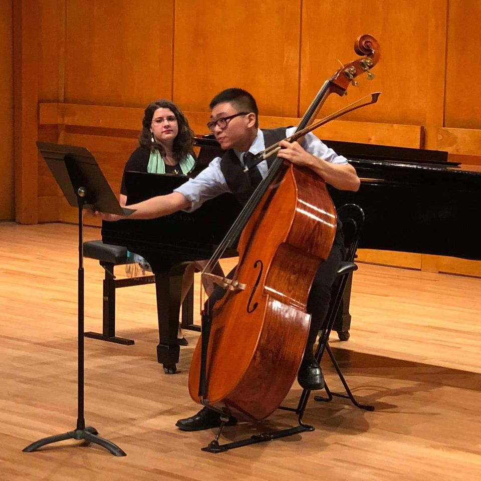

Solo double bass recital at Stony Brook University. 2019.
Performance of Dvorak's Quintet Op. 77. 2019.

Ascente Chamber Orchestra. 2018.
Conducting Stony Brook University's University Orchestra. 2018.
Staller Center's Instrument Petting Zoo showcased on Newsday. 2017.
Hindemith's duets for Clarinet and Double Bass at Frank Melville Jr. Memorial Library. 2019.
Jazz trio performing at my friend's wedding! 2018.
Performing Anderson's bass duets for Manhasset orchestra students with Dr. Benson. 2019.
Staller Center's Instrument Petting Zoo getting ready for Peter and the Wolf. 2019.